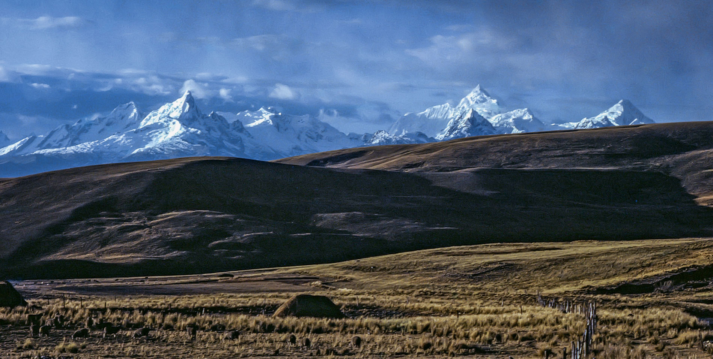
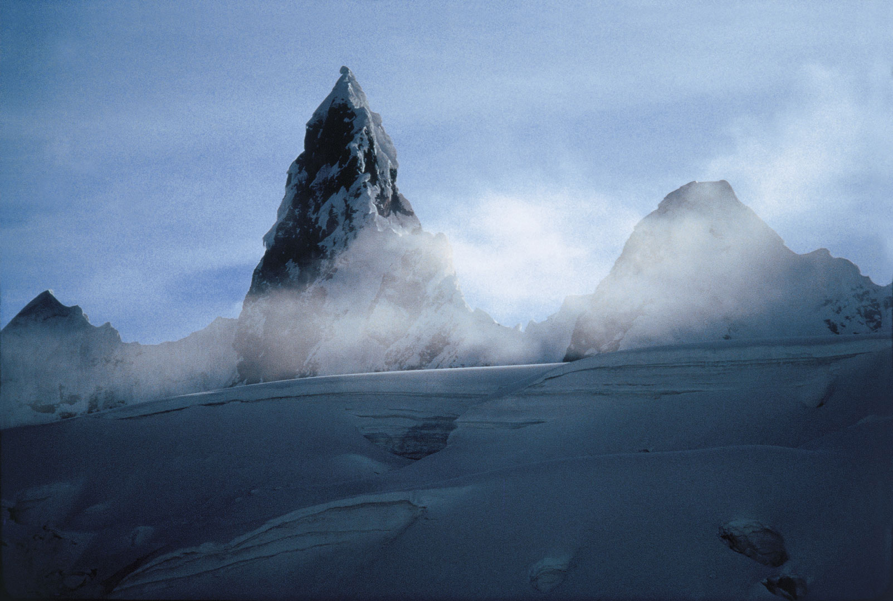
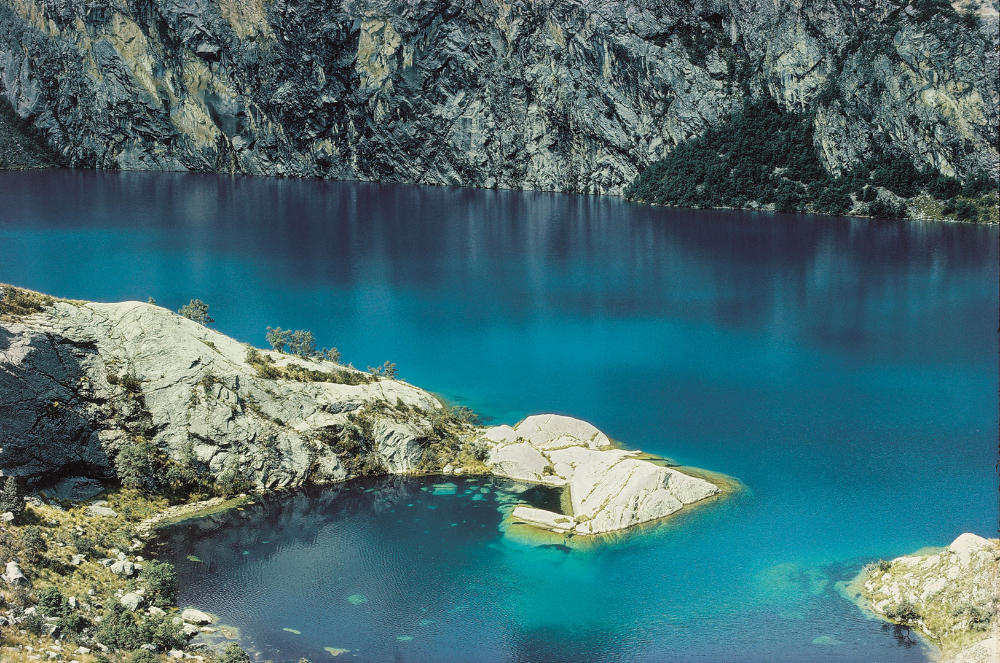

Natural Heritage of Peru

Established in 1975, the Parque Nacional Huascaran contains all the Cordillera Blanca(With exception of the distant Nevado Champara in its extreme north), the highest range of the Peruvian Andes and the highest range in the world's tropical zone. Its total area is aproximately 1300 square miles(340,000 hectares), roughly 110 miles (180 km) north-south, and an average of only 12 miles (20 km) east-west. Within its boundaries are thirty mountains above 6000 meters (19686 ft) above sea level (fifteen are above 20,000 feet, 6096 meters), crowned by Nevado Huascaran itself at 22205 feet (6768m).(&ldquoNevado’ means snow-covered peak). There are another thirty peaks above 18500 feet (5640 m), as well as hundrets of glacial lakes, rivers, and waterfalls, and an abundance of flora and fauna.
The Cordillera Blanca is without questions one of the magnificent mountain ranges in the world. And no other range combines its easy access and generally exellent climate with such an alpine wonderland of towering, ice-covered peaks. The Cordillera Blanca, the Parque Nacional Huascaran, is truly a treasure of the natural heritage of Peru and the entire world, a great living outdoor museum, and the goal every year of thousands of mountain climbers, scientists, and other wilderness lovers from all around the globe.
Location
The park is located in the department (equivalent to a state or province) of Ancash to the east of the beutifull Santa Valley, known as the Callejon(lane or corridor) de Huaylas. Huaraz, the principal city of the Callejon and the department capital is only 400 kilometers by paved highway from Lima(Peru's capital City), and only 200 kilometers from the Panamerican Highway near Pativilca.
With the exeption of the pictures taken from the glaciers themselves, all the places pictured in this book are within the reach of anyone willing to make a moderate effort to visit them. Most requiere only two to four days, and many of the pictures were taken from roads or towns. So prepare yourself and start walking, for though the photographs reproduced here can reveal glimpses of what you will discover, they can never apture the true beuty of the Cordillera Blanca. Nor can they transmit the sensations of peace, rest and refuge from the presures of everyday life you will find there.
Conservation
And as you enter into this natural wonderland, consider this: Shouldn't the park be protected and preserved so that future generations can have the same privilege as we have to enjoy its remarkable beuty?
The first step towards its conservation has been taken: the Parque Nacional Huascaran has been established and the Cordillera Blanca declared a “Zona intangible,” an area to be maintanined in its natural state. The next step is to lift this enlightened intention from the documents where it is written and make it a reality. All that is lacking is the interest and support of all wilderness lovers.
Some astonishing pictures from the book:


